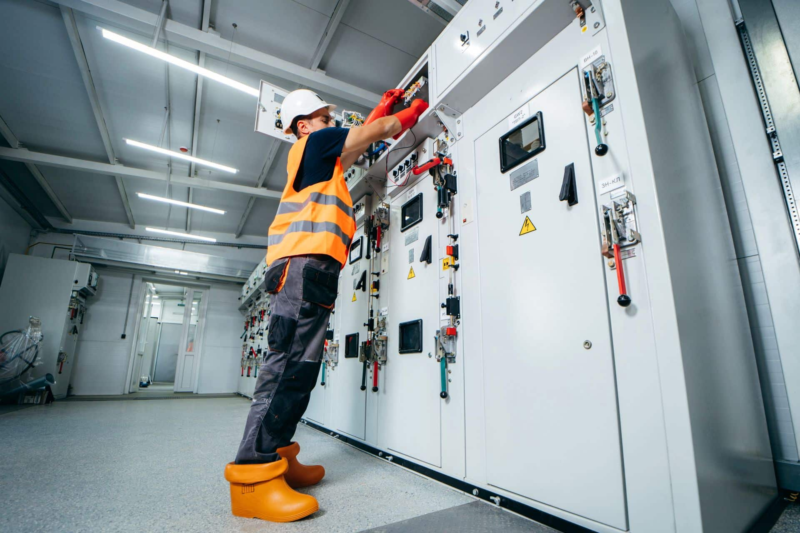

Agentic AI: slimme assistenten doen het voorwerk. Jouw mensen houden de regie.
Minder papierwerk en afstemming, meer tijd voor het echte werk. AI-assistenten die werken in de systemen die je al gebruikt: 4PS, Business Central, mail, spreadsheets en documenten.
Het voorwerk dat elke dag tijd kost
60–70% van de werktijd van een werkvoorbereider gaat op aan papierwerk en afstemming. Bron kantoortijd: Werkvoorbereider.nl.
Dubbel invoeren
Dezelfde data in ERP, planning en Excel.
Zoeken in mail en mappen
Tekeningen, revisies en klantafspraken.
Statussen najagen
Bestellingen, leveringen en planning.
Informatie komt te laat
Elke wijziging moet in meerdere systemen worden bijgewerkt.
Wat kunnen we optimaliseren?
Eén kerncijfer per rol bij bouw-, GWW- en installatiebedrijven.
van tickets zijn herhaalvragen
Bron: Schattingwerktijd aan support naast eigen functie
Bron: Schattingprojecten verliesgevend door onjuiste inschatting
Bron: Exact ’25werktijd op kantoor: documenten en afstemming
Bron: Werkvoorbereider.nlnon-productief: zoeken, conflicten, herstelwerk
Bron: FMI ’18bouwplaatsen niet volledig digitaal
Bron: Exact ’25mist volledig zicht op projecten en capaciteit
Bron: Exact ’25tijd aan intake en werkbonadministratie
Bron: Schattingmateriaalbeheer niet geautomatiseerd
Bron: Exact ’25administratie (deels) op papier of in Excel
Bron: Exact ’25Geen nieuwe tool. Wel slimmer werken in de systemen die je al hebt.
De assistent verzamelt, controleert en bereidt voor; een medewerker beoordeelt belangrijke acties. Jouw mensen blijven werken zoals ze gewend zijn.
AI-bouwstenen
Voorheen: mail zoeken, order opzoeken, leverancier bellen en planning bijwerken, handmatig verspreid over mail, ERP en Excel.
Een betrouwbare partner voor AI in jouw ERP-landschap.
ISO 27001 gecertificeerd
Informatiebeveiliging is bij DIS Group geborgd.
Binnen je bestaande systemen en rechten
De assistent werkt in 4PS, Business Central en Microsoft 365, met de rechten die je al hebt ingericht.
Menselijke goedkeuring
Een medewerker beoordeelt belangrijke acties. Jouw mensen houden de regie.
Logging en monitoring
Altijd zichtbaar wat een assistent doet, met beheer en verbetering.
De AI-inspiratie- en werksessie
Van enthousiasme naar een eerste prototype, in twee dagdelen.
Dagdeel 1 · Inspiratie
Mensen enthousiast maken en kansen in kaart. We laten zien wat AI nu al kan in jouw eigen processen. Daarna brengen we samen de kansen in kaart (impact × haalbaarheid) en kiezen we de beste.
Dagdeel 2 · Werksessie
Uitgewerkt idee en eerste prototype. We komen terug met een uitgewerkt idee en een eerste prototype of demo. Samen bepalen we de pilotscope en de vervolgstappen.
DIS Group kent jouw wereld
Wij kennen de vragen, de inrichting en de uitzonderingen. Daardoor bouwen we assistenten die passen bij jouw processen, niet andersom.
Bouw
Bouwbedrijven digitaliseren voor meer controle, efficiënte calculaties en koppelingen met BIM.
Meer informatie →GWW / Infra
GWW organisaties digitaliseren voor meer grip op projecten en efficiëntere materieelplanning.
Meer informatie →
Installatietechniek
Installatiebedrijven digitaliseren voor betere aansturing van buitendienst en onderhoud.
Meer informatie →Neem gerust contact op
Vragen of interesse in AI, data of ERP? Het team staat klaar om mee te denken over jouw processen in 4PS Construct en Business Central.